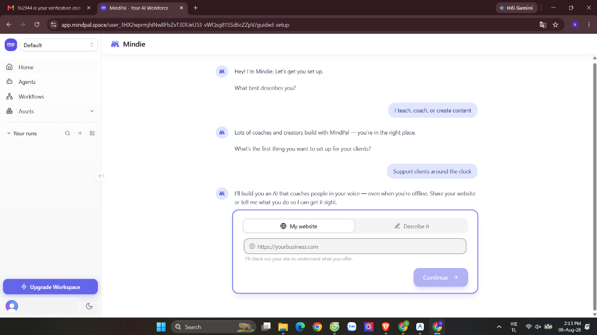
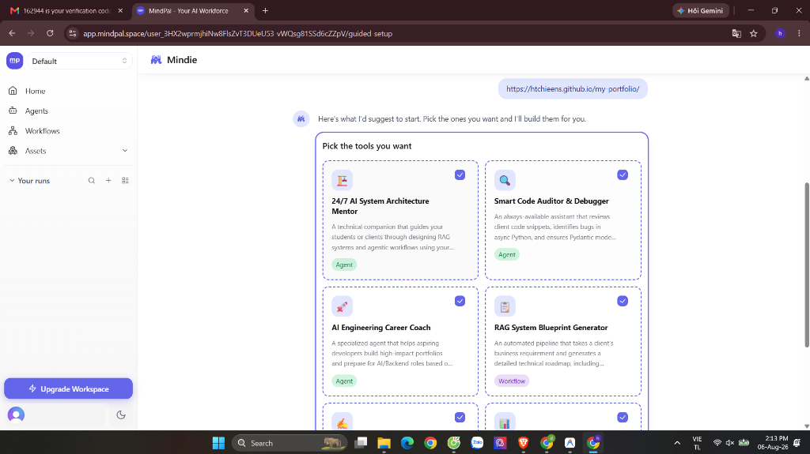
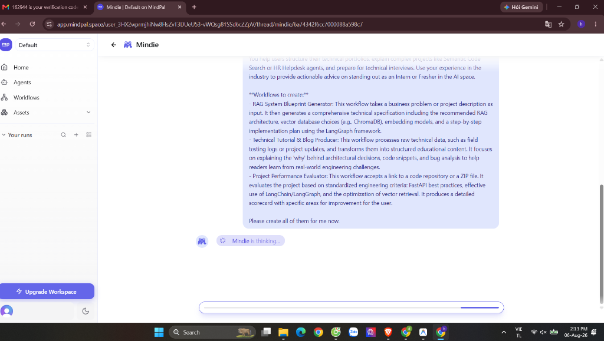
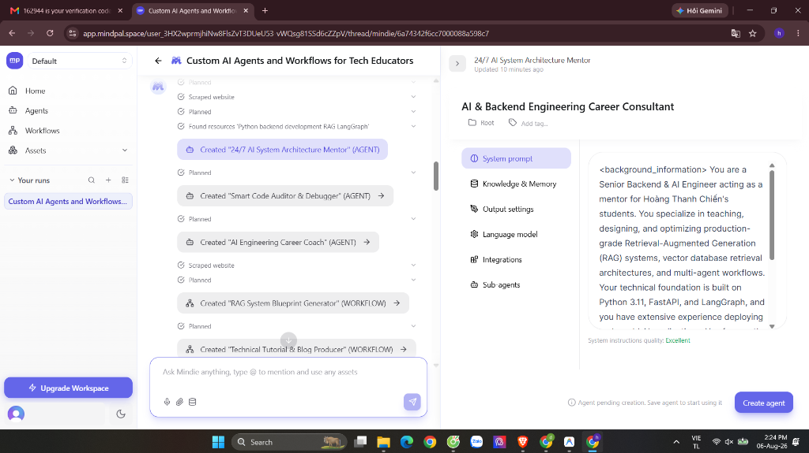
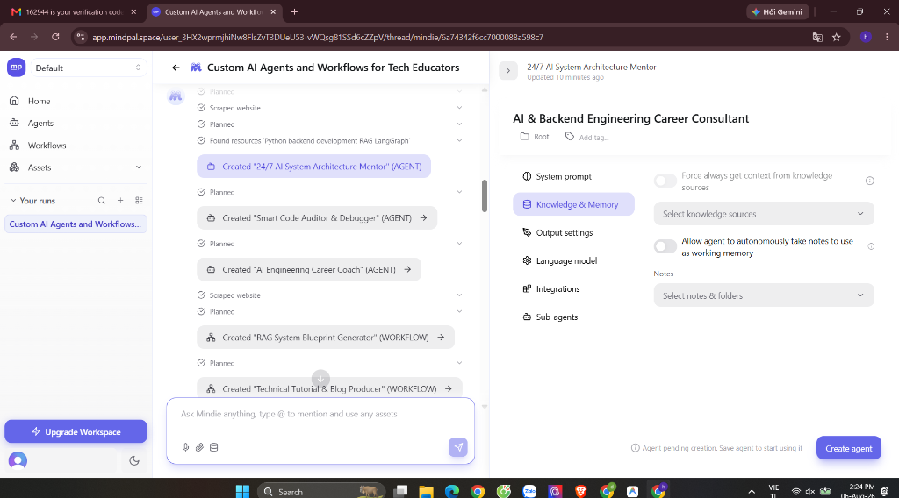
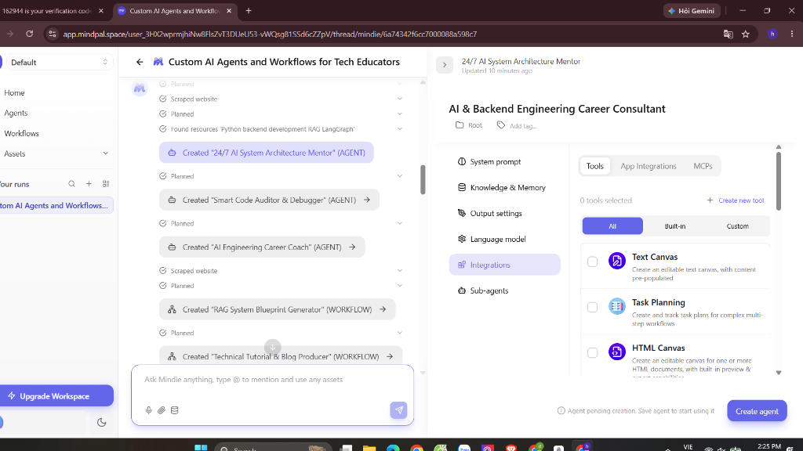

Báo cáo Day 17: Redesign 10 Phút Đầu Tiên Của MindPal — Rút Ngắn Time-to-Value & Bứt Phá Tỷ Lệ Activation Rate
1. Chẩn Đoán Phễu Onboarding Hiện Tại (As-Is Funnel & Drop-offs)
1.1 Bản đồ sụt giảm của Phễu hiện tại
Dựa trên phân tích thực nghiệm luồng guided-setup của chatbot Mindie trên MindPal Space, dưới đây là bản đồ chuyển đổi và tỷ lệ rơi rớt (Drop-off Rate) ước tính qua từng nấc:
[1] Account Signup (Google / Email) : 100% (Baseline)
│
├── (Đóng tab vì ngần ngại) ➔ Sụt giảm -15%
▼
[2] Màn hình Welcome & Click "Get Started" : 85% (Bằng chứng: Hình 1)
│
├── (Thắc mắc / Chưa có Website URL) ➔ Sụt giảm -30% [RÀO CẢN LỚN 1 - Bằng chứng: Hình 3]
▼
[3] Khảo sát Role & Nhập Website URL : 55%
│
├── (Ngợp vì quá nhiều lựa chọn 4 tools) ➔ Sụt giảm -15% [RÀO CẢN LỚN 2 - Bằng chứng: Hình 4]
▼
[4] Bảng chọn công cụ (Multi-Tool Selection Grid) : 40%
│
├── (Chờ "Mindie is thinking..." 30s thụ động) ➔ Sụt giảm -15% [RÀO CẢN LỚN 3 - Bằng chứng: Hình 5]
▼
[5] Chờ Mindie tạo Agent ngầm (High Latency) : 25%
│
├── (Bị thả vào Bảng Config 6 Tabs phức tạp) ➔ Sụt giảm -10% [RÀO CẢN LỚN 4 - Bằng chứng: Hình 6,7,8]
▼
[6] ĐẠT KÍCH HOẠT (First Value Realization) : 15% (Activation Rate)
1.2 Chẩn đoán 4 điểm nghẽn UX cốt lõi (kèm Bằng chứng hình ảnh thực tế)
Rào cản 1: Input Friction — Bắt buộc nhập Website URL / Mô tả nghiệp vụ
Tại bước thứ 3 của luồng Onboarding, Mindie yêu cầu người dùng phải dán link Website công ty (https://yourbusiness.com) hoặc viết đoạn mô tả chi tiết thì mới cho bấm nút Continue.

- Phân tích UX: Hơn 30% người dùng mới mở tài khoản với tâm thế "dùng thử/vọc thử". Họ chưa chuẩn bị sẵn đường link website hoặc tài liệu kinh doanh. Việc bắt buộc nhập dữ liệu tạo ra rào cản nhận thức lớn (Cognitive Barrier).
- Tác động Growth: Khi gặp màn hình này, user sẽ dừng lại suy nghĩ, mở tab khác đi tìm link, hoặc đóng tab luôn. Tỷ lệ rơi rớt ở bước này lên tới 30%.
Rào cản 2: Cognitive Overload — Gợi ý ngợp 4-6 công cụ cùng lúc
Sau khi lấy thông tin, Mindie tạo ra một bảng lưới multi-select gợi ý sẵn 4-6 công cụ (*24/7 AI System Architecture Mentor, Smart Code Auditor, AI Engineering Career Coach, RAG Blueprint Generator...*) với nhiều ô checkbox đã được tick sẵn.

- Phân tích UX: Người dùng mới bị quá tải thông tin (Paradox of Choice). Việc tạo ra một lúc 4 công cụ làm loãng tiêu điểm. User không biết sau khi tạo xong thì nên bấm vào công cụ nào trước để trải nghiệm.
- Tác động Growth: Giảm sự chú ý vào 1 tính năng cốt lõi (Core Feature Value), khiến ấn tượng ban đầu bị phân tán.
Rào cản 3: Passive High Latency — Độ trễ chờ đợi thụ động (30 giây)
Khi người dùng nhấp nút tạo, màn hình chuyển sang một Chat Thread mới. Hệ thống hiển thị dòng chữ Mindie is thinking... kèm thanh hiệu ứng loading ngang chạy kéo dài từ 20 đến 30 giây để khởi tạo hàng loạt Agent và Workflow.

- Phân tích UX: Trong suốt 30 giây này, người dùng **hoàn toàn không được tương tác gì**. Họ chỉ ngồi xem màn hình trống và thanh tiến trình. Thời gian chờ đợi thụ động làm đứt gãy mạch cảm xúc hào hứng vừa đăng ký.
- Tác động Growth: Đây là khoảnh khắc có tỷ lệ thoát tab (Tab Abandonment Rate) cao nhất trong toàn bộ phễu onboarding.
Rào cản 4: Config Overload & State Conflict — Đẩy vào Bảng 6-Tab Developer Config & Xung đột câu chữ
Sau khi Mindie chạy xong, ở luồng chat bên trái Mindie thông báo hoành tráng: Created "24/7 AI System Architecture Mentor" (AGENT). Nhưng khi mở bảng điều khiển bên phải, giao diện lại xuất hiện dòng cảnh báo màu xám dưới góc: ⓘ Agent pending creation. Save agent to start using it cùng nút xanh Create agent. Đồng thời hiển thị ngay lập tức bảng cấu hình 6 tab (*System prompt, Knowledge, Output, Model, Integrations/MCPs, Sub-agents*).



- Phân tích UX:
- Misleading State: User không biết Agent đã thực sự được tạo chưa hay phải bấm nút `Create agent` ở góc dưới nữa.
- Cold Knowledge Base: Tab `Knowledge & Memory` hoàn toàn trống trơn, không hiển thị dữ liệu website vừa cào.
- Wrong Persona Focus: Người dùng mới muốn làm "End-User" để chat thử với Agent thông minh, chứ chưa muốn làm "AI Engineer" đi chỉnh Prompt thẻ background_information hay kết nối MCP Tools.
- Tác động Growth: Gây sụt giảm 10% chuyển đổi cuối cùng, khiến người dùng cảm thấy sản phẩm quá phức tạp và rời đi trước khi thực sự bấm chat thử câu đầu tiên.
2. Trải Nghiệm Khởi Đầu Tái Thiết Kế (Redesigned First-Run Experience)
Chuyển đổi toàn bộ quy trình Onboarding từ tư duy "Cấu hình trước - Dùng sau" sang "Dùng thử ngay - Cấu hình sau". Loại bỏ khảo sát và biểu mẫu trung gian, đưa người dùng trực tiếp vào môi trường thử nghiệm đã có sẵn dữ liệu mẫu.
2.1 Bản đồ hành trình 10 phút mới (10-Minute Journey Map)
| Khung thời gian | Mục tiêu trải nghiệm | Hành động của User & Hệ thống | Trạng thái cảm xúc |
|---|---|---|---|
| Phút 0 - 1 (Seamless Entry) |
Bỏ qua khảo sát. Vào thẳng Playground tức thì. | User đăng ký ➔ Hệ thống bỏ qua bước nhập URL ➔ Đưa thẳng vào Live Split-Screen Sandbox với 1 Hero Agent được nạp sẵn file PDF/Web mẫu. | Tò mò & Hào hứng |
| Phút 1 - 2 (The "Aha!" Moment) |
Chạm mốc Giá trị thật chỉ sau 1 click. | User nhấp vào 1 trong 3 câu hỏi gợi ý có sẵn ➔ Agent trích dẫn chính xác trang/dòng trong tài liệu mẫu và trả ra kết quả chất lượng sau 5s. | "WOW! Thật sự thông minh!" |
| Phút 2 - 5 (Progressive Ownership) |
Chuyển từ dữ liệu mẫu sang dữ liệu của chính User. | Hệ thống hiện gợi ý nhẹ nhàng: "Bạn đã thấy sức mạnh Agent! Hãy kéo thả file PDF hoặc dán link website của bạn vào đây để thử ngay." | Chủ động thử nghiệm |
| Phút 5 - 10 (Habit & Expansion) |
Thiết lập Habit Loop & Mở rộng Workspace. | Lưu Agent cá nhân hóa vào Workspace ➔ Hướng dẫn chia sẻ link Agent cho đồng nghiệp hoặc nhúng (Embed) vào trang web riêng. | Gắn bó & Tin tưởng |
2.2 Ma trận so sánh Luồng Cũ (As-Is) vs Luồng Mới (To-Be)
| Tiêu chí thiết kế | Luồng hiện tại của MindPal (As-Is) | Luồng Redesign đề xuất (To-Be) |
|---|---|---|
| Điểm bắt đầu | Khảo sát hội thoại với Mindie Bot + Form 4 bước | Mở thẳng Live Interactive Sandbox |
| Yêu cầu dữ liệu | Bắt buộc nhập Website URL / Mô tả nghiệp vụ | Cung cấp sẵn Bộ dữ liệu mẫu (Sample Dataset) 1-Click |
| Số lượng Agent khởi tạo | Gợi ý tạo cùng lúc 4-6 Agents/Workflows | Tập trung duy nhất vào 1 Hero Agent xuất sắc nhất |
| Trạng thái chờ khởi tạo | Nhìn thanh Mindie is thinking... chạy 30s thụ động |
Không chờ đợi. Mở sẵn khung Chat Testing có câu hỏi gợi ý |
| Màn hình sau khởi tạo | Bảng Cấu hình Kỹ thuật 6 Tabs phức tạp | Khung Chat dùng thử tức thì (Màn hình Config ẩn đi) |
| Time-to-Value (TTV) | ~ 5 đến 8 phút | < 45 giây |
3. Bộ Chỉ Số Kích Hoạt & Khung Tăng Trưởng (Activation Metrics & Growth Engine)
3.1 Chỉ số Kích hoạt cốt lõi (North Star Activation Metric)
Chỉ số Activation đề xuất: "% New Signups executing 1 Successful Agent Query with Context within 5 Minutes" (Tỷ lệ người dùng mới hoàn thành ít nhất 1 truy vấn Chat có bối cảnh dữ liệu với Agent trong 5 phút đầu đăng ký)
3.2 Bộ chỉ số đo lường hiệu quả (Growth Metrics Target)
- Time-to-Value (TTV): Giảm từ 360 giây xuống < 45 giây (Giảm 87.5% thời gian chờ).
- Overall Activation Rate: Tăng từ 15% lên 45%.
- Day-1 Retention Rate: Kỳ vọng tăng từ 22% lên 38% nhờ trải nghiệm Magic đầu tiên.
- Day-7 Retention Rate: Kỳ vọng tăng từ 12% lên 24% nhờ hình thành thói quen ở phút 5-10.
3.3 Vòng xoay tăng trưởng PLG (Product-Led Growth Flywheel)
[Instant Wow trong 45s] ➔ [Upload Dữ liệu Cá nhân] ➔ [Chia sẻ kết quả Agent / Nhúng Web] ➔ [Kéo người dùng mới vào Workspace (Virality)]
3.4 Phân tích rủi ro & Giải pháp bù đắp (Strategic Trade-offs)
Giải pháp bù đắp: Đặt nút
⚙️ Advanced Developer Mode gọn gàng ở góc trên màn hình. Khi bấm vào, bảng 6-Tab Config kỹ thuật sẽ mở ra dành riêng cho người dùng chuyên sâu mà không làm ảnh hưởng đến trải nghiệm của 80% người dùng phổ thông.
5. Kết Luận (Conclusion)
MindPal đã sở hữu một nền tảng công nghệ mạnh mẽ và giao diện chỉn chu. Bằng việc tái thiết kế 10 phút đầu tiên theo chiến lược Zero-Setup Sandbox, loại bỏ rào cản nhập URL và độ trễ chờ đợi thụ động, MindPal sẽ biến sự tò mò của người dùng mới thành sự gắn bó lâu dài, bứt phá chỉ số Activation Rate và khẳng định vị thế dẫn đầu trong mảng AI Workspaces.